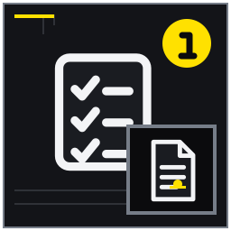
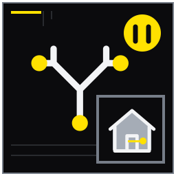

貸したいより先に目的を一文にする
収入確保、維持、将来利用のどれを優先するかを明確にする。
MITSUKE RENT GUIDE 01
貸す・売る・保留の結論を先に決めず、現況、名義、家族意向、修繕余力、管理体制を一枚の判断表にまとめる入口記事。
募集前の全体整理では、資料が全部そろうのを待つより、確認済み・未確認・専門家へ聞く事項を分けるほうが実務は進みます。この記事は磐田市見付または周辺に実家・空き家を持ち、売却を急がず賃貸活用の可否から相談したい所有者と家族に向け、14の論点を現地確認と相談準備の順に整理しました。貸す・売る・保留の結論を先に決めず、現況、名義、家族意向、修繕余力、管理体制を一枚の判断表にまとめる入口記事。 結論を保証するものではなく、対象物件と契約条件に合わせて確認先を選ぶためのガイドです。
想定している検索時の疑問は、「見付 実家 賃貸」「空き家 貸す 何から」「戸建て 賃貸に出す」で、貸せる状態か、家族・権利・建物・残置物の確認順を知りたい。 以下では広告上の一言で判断せず、記録、比較、相談境界、次の行動を章ごとに示します。
収入確保、維持、将来利用のどれを優先するかを明確にする。
築年、増改築、雨漏り、設備交換の情報を家族から回収する。

図面と現況の差、古い増築、耐震性など専門確認の入口をつくる。

賃料だけでなく募集、管理、保険、修繕、税を仮置きする。
収入確保、維持、将来利用のどれを優先するかを明確にする。 募集前の全体整理の第1章では、貸せる・貸せないを急いで決めず、建物、権利、家族予定を確認可能な材料へ変えることを基本にします。募集前の全体整理の冒頭では、希望する結果、現在分かっている事実、未確認事項を三段に分けます。募集前の全体整理の第1章では、結論を先に書かず、何が判明すれば次へ進めるかを一行で定めます。
親の施設費を補いつつ三年後に家族利用を再検討する例を比較する。 募集前の全体整理の第1章では、例の条件を自宅へ移す前に、一致する点と異なる点を各二つ挙げます。家族会議メモには採用した前提だけでなく、採用しなかった理由も残してください。
目的が違えば契約期間や投資上限も変わり、家族の推測だけで決めない。 募集前の全体整理の第1章では、目的を増やしすぎると優先順位が曖昧になります。募集前の全体整理では譲れない条件を一つ選び、それ以外は調整可能かを家族で確かめます。
優先目的と見直し時期を家族会議メモに記す。 実行後、家族会議メモへ優先順位、再確認日、判断を変える条件を書きます。募集前の全体整理の第1章では、反対意見も消さずに残せば、次回の話合いを同じ出発点から始められます。 募集前の全体整理の第1章を確認した後は、根拠の更新日と次の担当者を追記し、別の家族が読んでも作業を再開できる状態に整えます。家族会議メモの第1欄で判断を保留した項目には、保留理由と再確認のきっかけを残してください。
相談に参加すべき人と契約判断ができる人を分けて把握する。 募集前の全体整理の第2章では、貸せる・貸せないを急いで決めず、建物、権利、家族予定を確認可能な材料へ変えることを基本にします。募集前の全体整理で人が関わる論点は、連絡する人、説明を受ける人、最終決定する人を分けます。募集前の全体整理の第2章では、氏名だけでなく担当できる範囲まで書くと、確認漏れを防げます。
親名義の家を子が管理している場合の確認資料を示す。 募集前の全体整理の第2章では、当事者が複数なら、同じ説明を全員が確認したかを見ます。家族会議メモへ回答日と回答者を書き、伝聞と本人確認を区別します。
代理や共有、判断能力に論点があれば不動産会社だけで結論を出せない。 募集前の全体整理の第2章では、日常の連絡担当であることと法的な権限は同じではありません。募集前の全体整理の都合だけで代理や共有の扱いを決めず、必要な専門確認へ渡します。
登記事項証明書等を確認し、必要なら司法書士等へつなぐ。 家族会議メモに確認者、根拠資料、権限の範囲を記します。募集前の全体整理の第2章では、追加照会が必要なら、相談先と持参する書類が決まった時点を一区切りにします。 募集前の全体整理の第2章を確認した後は、根拠の更新日と次の担当者を追記し、別の家族が読んでも作業を再開できる状態に整えます。家族会議メモの第2欄で判断を保留した項目には、保留理由と再確認のきっかけを残してください。
帰省利用、相続、売却予定を時間軸に置いて契約方針の材料にする。 募集前の全体整理の第3章では、貸せる・貸せないを急いで決めず、建物、権利、家族予定を確認可能な材料へ変えることを基本にします。募集前の全体整理に期限が関わる場合は、開始希望日だけでなく、再検討日と変更できなくなる日を置きます。募集前の全体整理の第3章では、予定と確定事項を別の記号にすると誤読を減らせます。
五年以内に孫が住む可能性がある家の検討例を扱う。 募集前の全体整理の第3章では、将来の出来事には確度の差があります。家族会議メモでは確定、予定、可能性の三つに色分けし、契約や支出へ影響する時点を強調します。
定期・普通借家の選択は個別契約と法的条件を伴うため断定しない。 募集前の全体整理の第3章では、予定があるという理由だけで契約方式を断定できません。募集前の全体整理では制度の一般説明と対象契約の手続を分けて確認します。
家族予定を年表にして相談時に持参する。 家族会議メモの予定には年月と確度を付けます。募集前の全体整理の第3章では、変更が起きた際の連絡担当も決め、古い予定のまま手続が進まないようにします。 募集前の全体整理の第3章を確認した後は、根拠の更新日と次の担当者を追記し、別の家族が読んでも作業を再開できる状態に整えます。家族会議メモの第3欄で判断を保留した項目には、保留理由と再確認のきっかけを残してください。
築年、増改築、雨漏り、設備交換の情報を家族から回収する。 募集前の全体整理の第4章では、貸せる・貸せないを急いで決めず、建物、権利、家族予定を確認可能な材料へ変えることを基本にします。募集前の全体整理の根拠は新しい順に並べ、資料がない期間も空白として示します。募集前の全体整理の第4章では、古い口頭情報は発言者と時期を添え、現物で確かめる項目へ回します。
十年前の浴室改修は分かるが給湯器年式が不明な例を整理する。 募集前の全体整理の第4章では、履歴が途切れている箇所を無理に埋める必要はありません。家族会議メモに「いつから不明か」を書けば、点検や追加資料の探索範囲を絞れます。
記憶だけの履歴は現況と異なる可能性がある。 募集前の全体整理の第4章では、記憶にないことを異常なしへ置き換えないでください。募集前の全体整理では不明期間を残し、募集前に現物を点検する対象とします。
写真、領収書、保証書、図面を一つの袋へ集める。 家族会議メモから原資料の保管場所へたどれるようにします。募集前の全体整理の第4章では、未発見の物には探索先と次回日を入れ、見つからない事実も記録として扱います。 募集前の全体整理の第4章を確認した後は、根拠の更新日と次の担当者を追記し、別の家族が読んでも作業を再開できる状態に整えます。家族会議メモの第4欄で判断を保留した項目には、保留理由と再確認のきっかけを残してください。
屋根、外壁、塀、庭木、道路、駐車動線を初回確認の範囲にする。 募集前の全体整理の第5章では、貸せる・貸せないを急いで決めず、建物、権利、家族予定を確認可能な材料へ変えることを基本にします。募集前の全体整理で現地を見る際は、全体像から個別箇所へ進みます。募集前の全体整理の第5章では、場所が伝わる写真と状態が読める写真を組にし、安全に近づけない場所は距離を保って記します。
細い進入路と越境しそうな枝がある見付の戸建てを想定する。 募集前の全体整理の第5章では、寸法や距離が影響する例では、感覚語だけを使わず測れる範囲を数値にします。家族会議メモから写真番号を参照できるようにします。
危険な屋根上確認や隣地立入りは行わない。 募集前の全体整理の第5章では、高所、電気、ガス、隣地など危険や権利に関わる確認は無理に行いません。募集前の全体整理の観察記録を資格者や適切な窓口へ渡します。
四方向の外観と道路幅感を安全な場所から撮影する。 家族会議メモに撮影位置の略図と写真番号を付けます。募集前の全体整理の第5章では、測れなかった箇所や境界不明箇所は、その理由と照会先を一緒に残します。 募集前の全体整理の第5章を確認した後は、根拠の更新日と次の担当者を追記し、別の家族が読んでも作業を再開できる状態に整えます。家族会議メモの第5欄で判断を保留した項目には、保留理由と再確認のきっかけを残してください。
漏水、通電、換気、臭気、建具、火災警報器を募集可否の材料にする。 募集前の全体整理の第6章では、貸せる・貸せないを急いで決めず、建物、権利、家族予定を確認可能な材料へ変えることを基本にします。募集前の全体整理の点検項目は場所ごとに固定し、確認済み、異常あり、未確認を使い分けます。募集前の全体整理の第6章では、異常がないという推測と、実際に作動を確かめた結果を混ぜません。
長期閉鎖後に排水臭とブレーカー不明が残る例を扱う。 募集前の全体整理の第6章では、作動例を比べる場合は、試した日時、条件、結果をそろえます。家族会議メモへ短時間の確認か継続使用の結果かも記し、保証のように扱いません。
設備を無理に作動させず、異常時は資格者へ相談する。 募集前の全体整理の第6章では、短時間の作動だけで継続使用の安全を保証することはできません。募集前の全体整理で異音、臭い、濡れを見つけたら使用を止めます。
部屋別チェック表に確認済みと未確認を分ける。 家族会議メモでは正常、異常、未確認を使い分け、異常には発見日時を添えます。募集前の全体整理の第6章では、再試験せず業者へ渡す項目も明示します。 募集前の全体整理の第6章を確認した後は、根拠の更新日と次の担当者を追記し、別の家族が読んでも作業を再開できる状態に整えます。家族会議メモの第6欄で判断を保留した項目には、保留理由と再確認のきっかけを残してください。
所有者、必要品、処分保留品、貸出時に残す設備を区別する。 募集前の全体整理の第7章では、貸せる・貸せないを急いで決めず、建物、権利、家族予定を確認可能な材料へ変えることを基本にします。募集前の全体整理で物や設備を扱うときは、所有、使用、修理、処分の判断者を分けます。募集前の全体整理の第7章では、現状のまま貸すのか撤去するのかを、募集開始前の期限と結び付けます。
仏壇ではなく食器棚と古いエアコンを残すか判断する例を示す。 募集前の全体整理の第7章では、残す案と撤去する案は、費用だけでなく故障時の連絡と責任まで比べます。決まらない場合は家族会議メモに保留期限を置きます。
家族の同意や所有関係が不明な物を勝手に処分しない。 募集前の全体整理の第7章では、所有者が不明な物を一人で処分すると家族間の問題になります。募集前の全体整理では同意の有無を残し、片付け日程と判断期限を分けます。
物ごとに所有者・判断期限・搬出先を記録する。 家族会議メモへ所有者、扱い、期限、移動先を一品ごとに記します。募集前の全体整理の第7章では、回答待ちは担当者を決め、募集準備の他工程と混同しません。 募集前の全体整理の第7章を確認した後は、根拠の更新日と次の担当者を追記し、別の家族が読んでも作業を再開できる状態に整えます。家族会議メモの第7欄で判断を保留した項目には、保留理由と再確認のきっかけを残してください。
図面と現況の差、古い増築、耐震性など専門確認の入口をつくる。 募集前の全体整理の第8章では、貸せる・貸せないを急いで決めず、建物、権利、家族予定を確認可能な材料へ変えることを基本にします。募集前の全体整理に専門判断が含まれる章では、所有者が決める希望と専門家へ照会する事実を分離します。募集前の全体整理の第8章では、写真や図面に番号を付け、質問箇所を特定します。
離れをつないだ廊下が図面に見当たらない例を置く。 募集前の全体整理の第8章では、図面と現況が違う例では、どちらが正しいかを即断しません。家族会議メモに差の位置、発見日、照会先を書き、専門家が追える形にします。
適法性や安全性は目視だけで判断せず、行政・建築士等の確認を要する場合がある。 募集前の全体整理の第8章では、簡易な目視は診断や法適合の証明ではありません。募集前の全体整理では疑問箇所を特定するところまでとし、結論を専門家へ先回りしません。
不一致箇所を写真と平面メモで相談者へ伝える。 家族会議メモの図面上で不一致箇所を囲み、対応写真と質問を付けます。募集前の全体整理の第8章では、回答を受けたら結論だけでなく前提条件も保存します。 募集前の全体整理の第8章を確認した後は、根拠の更新日と次の担当者を追記し、別の家族が読んでも作業を再開できる状態に整えます。家族会議メモの第8欄で判断を保留した項目には、保留理由と再確認のきっかけを残してください。
間取り、駐車、庭、学校距離から想定世帯と募集条件を検討する。 募集前の全体整理の第9章では、貸せる・貸せないを急いで決めず、建物、権利、家族予定を確認可能な材料へ変えることを基本にします。募集前の全体整理の想定は、一つの成功例へ寄せず、合う条件と合わない条件を同数出します。募集前の全体整理の第9章では、広告上の魅力と、利用時に守る制約が対応する形を目指します。
車二台と庭管理を重視する子育て世帯を一候補にする。 募集前の全体整理の第9章では、想定する利用者像は属性名ではなく生活場面で表します。家族会議メモでは必要な機能と物件側の制約を一組にし、排除条件へすり替えません。
想定を特定属性の排除や断定的な需要予測に使わない。 募集前の全体整理の第9章では、想定像を不合理な入居差別へ結び付けないよう注意します。募集前の全体整理では物件の機能と利用条件を一貫した言葉で説明します。
強み三つと制約三つを現地事実から書く。 家族会議メモに強みと制約を同数置き、各項目を現地写真と結び付けます。募集前の全体整理の第9章では、公開前に広告表現が事実を広げていないか照合します。 募集前の全体整理の第9章を確認した後は、根拠の更新日と次の担当者を追記し、別の家族が読んでも作業を再開できる状態に整えます。家族会議メモの第9欄で判断を保留した項目には、保留理由と再確認のきっかけを残してください。
安全必須、募集力向上、将来計画の修繕を分ける。 募集前の全体整理の第10章では、貸せる・貸せないを急いで決めず、建物、権利、家族予定を確認可能な材料へ変えることを基本にします。募集前の全体整理で費用が動く章は、金額だけでなく発生時期、支払先、再発可能性を並べます。募集前の全体整理の第10章では、一度だけの支出と継続支出を同じ月額欄へ混ぜないようにします。
給湯器確認、畳表替え、外壁塗装を別順位に置く例を示す。 募集前の全体整理の第10章では、二つの金額を比べる際は、範囲、数量、保証、除外項目を合わせます。家族会議メモに条件差を残せば、総額の安さだけで選ぶ誤りを避けられます。
見積額だけでなく工期、空室期間、税務上の扱いも個別確認が必要。 募集前の全体整理の第10章では、支出が大きいほど効果が高いとは限りません。募集前の全体整理では安全確保と収益改善を別に評価し、賃料上昇や早期成約を保証しません。
二社以上の範囲が揃った見積を比較する。 家族会議メモに範囲、数量、保証、除外、支払時期を並べます。募集前の全体整理の第10章では、条件がそろわない見積は順位を付けず、質問を返した日を残します。 募集前の全体整理の第10章を確認した後は、根拠の更新日と次の担当者を追記し、別の家族が読んでも作業を再開できる状態に整えます。家族会議メモの第10欄で判断を保留した項目には、保留理由と再確認のきっかけを残してください。
故障、近隣連絡、家賃、更新を誰が受けるか明確にする。 募集前の全体整理の第11章では、貸せる・貸せないを急いで決めず、建物、権利、家族予定を確認可能な材料へ変えることを基本にします。募集前の全体整理の役割分担は、平常時と緊急時で分けます。募集前の全体整理の第11章では、最初に受け付ける人、現地へ行く人、費用を承認する人が不在の場合の代替も決めます。
遠方の子と地元管理会社で役割を分ける例を扱う。 募集前の全体整理の第11章では、遠方対応の例は、移動時間と連絡可能時間を現実の予定で試します。家族会議メモへ家族が担えない時間帯を明記し、委託範囲の候補にします。
夜間対応や立替範囲は管理契約により異なる。 募集前の全体整理の第11章では、対応可能という一言だけでは受付時間や追加料金が分かりません。募集前の全体整理では契約範囲、立替上限、報告方法まで書面で確かめます。
希望する報告頻度と緊急連絡順を一覧にする。 家族会議メモへ受付、現地対応、承認、報告の順番を記します。募集前の全体整理の第11章では、不在時の代替者と緊急時だけ許される判断範囲も確認します。 募集前の全体整理の第11章を確認した後は、根拠の更新日と次の担当者を追記し、別の家族が読んでも作業を再開できる状態に整えます。家族会議メモの第11欄で判断を保留した項目には、保留理由と再確認のきっかけを残してください。
賃料だけでなく募集、管理、保険、修繕、税を仮置きする。 募集前の全体整理の第12章では、貸せる・貸せないを急いで決めず、建物、権利、家族予定を確認可能な材料へ変えることを基本にします。募集前の全体整理の数字は一点ではなく幅で持ちます。募集前の全体整理の第12章では、標準案に加え、条件が良い場合と悪い場合を置き、どの前提が結果へ大きく影響するかを見ます。
一年目に給湯器交換が生じる場合の資金余力を見る。 募集前の全体整理の第12章では、数値例は将来予測ではなく耐久力を見る仮定です。家族会議メモへ計算式と基準日を添え、実額が判明したときに差し替えられるようにします。
税額や必要経費は個別事情で変わるため税理士・税務署へ確認する。 募集前の全体整理の第12章では、税額や必要経費は所有者の事情と内容により変わります。募集前の全体整理の試算だけで申告を決めず、証憑をそろえて税務の専門窓口へ確認します。
楽観・標準・慎重の三案を作る。 家族会議メモでは三案に同じ費目を置き、仮定だけを変えます。募集前の全体整理の第12章では、実額が出たら元の数字を消さず、差額と判明日を追記します。 募集前の全体整理の第12章を確認した後は、根拠の更新日と次の担当者を追記し、別の家族が読んでも作業を再開できる状態に整えます。家族会議メモの第12欄で判断を保留した項目には、保留理由と再確認のきっかけを残してください。
選択肢ごとの時間、費用、戻しやすさ、家族負担を比較する。 募集前の全体整理の第13章では、貸せる・貸せないを急いで決めず、建物、権利、家族予定を確認可能な材料へ変えることを基本にします。募集前の全体整理で複数案を比べるときは、基準日と比較期間をそろえます。募集前の全体整理の第13章では、金額、時間、家族負担、元へ戻しやすさを同じ表で評価します。
一旦半年管理し、その間に賃貸査定と売却査定を揃える案を検討する。 募集前の全体整理の第13章では、比較例には、何もしない場合にも生じる費用と手間を加えます。家族会議メモで各案の判断期限をそろえ、古い査定を混在させません。
査定額は将来成果の保証ではない。 募集前の全体整理の第13章では、査定額、入居率、将来価格は成果の保証ではありません。募集前の全体整理では取得日と前提を残し、条件が変われば比較を更新します。
判断期限と次回会議日を決める。 家族会議メモの上部へ基準日、比較期間、未算入費用を書きます。募集前の全体整理の第13章では、不足資料の担当者と次回会議日を決めてから終えます。 募集前の全体整理の第13章を確認した後は、根拠の更新日と次の担当者を追記し、別の家族が読んでも作業を再開できる状態に整えます。家族会議メモの第13欄で判断を保留した項目には、保留理由と再確認のきっかけを残してください。
未確認事項を残したままでも、相談可能な情報単位へ整える。 募集前の全体整理の第14章では、貸せる・貸せないを急いで決めず、建物、権利、家族予定を確認可能な材料へ変えることを基本にします。募集前の全体整理の最終章では、原本を一か所へ移すことより、所在と更新日を一覧にすることを優先します。募集前の全体整理の第14章では、未入手の資料も名称と確認先を残します。
名義、設備、家族予定、写真、見積の所在をカルテ化する。 募集前の全体整理の第14章では、一枚にまとめるのは結論ではなく資料索引です。家族会議メモから写真、契約、見積、家族メモの最新版へたどれる状態を作ります。
実家カルテは法務・税務・建物診断を代替しない。 募集前の全体整理の第14章では、整理表は契約書、診断書、税務判断の代わりではありません。募集前の全体整理では原資料と専門家回答の所在を示す索引として使います。
資料不足欄も含めて賃貸相談へ持ち込む。 家族会議メモに資料名、保管場所、更新日、管理者を登録します。募集前の全体整理の第14章では、未確認のまま相談へ持参し、次の調査が決まれば整理は前進しています。 募集前の全体整理の第14章を確認した後は、根拠の更新日と次の担当者を追記し、別の家族が読んでも作業を再開できる状態に整えます。家族会議メモの第14欄で判断を保留した項目には、保留理由と再確認のきっかけを残してください。
募集前の全体整理の準備状況を確認するため、完了・未完了だけでなく根拠資料の場所も記してください。
現況確認から相談できるが、残す物・動かせない物・所有者不明を区別すると検討が進みやすい。まず現況を変えずに相談材料をそろえると、必要な作業の順番を決めやすくなります。
築年だけで決まらず、安全性、設備、立地、修繕費、募集条件を個別に確認する。築年数だけで可否を決めず、安全性、設備、費用、募集条件を対象物件ごとに確認します。
相談は可能でも契約判断の権限確認が別途必要になる。相談に参加できることと契約権限は別なので、名義と委任の状況を資料で確かめます。
先に想定賃料と必須修繕を整理し、募集力向上工事は回収可能性と合わせて判断する。想定賃料と安全上必要な工事を先に整理し、印象改善工事は回収可能性を見て判断します。
情報整理と相談の入口に使うもので、建物検査、法務、税務などの専門判断を置き換えるものではない。カルテは未確認事項を専門家へ渡す索引であり、法務・税務・建物診断の結論そのものではありません。
制度や手続は更新されるため、公開元の最新情報と対象範囲を確認してください。リンク先の説明は個別物件への判断を代替しません。
本記事は2026年8月時点の一般的な情報整理と相談準備を目的としています。対象物件の安全性、適法性、契約条件、税務上の取扱い、修繕の必要性を診断・保証するものではありません。法務は弁護士・司法書士、税務は税務署・税理士、建物の安全や工事は建築士・施工業者、行政制度は担当窓口へ個別に確認してください。富士ヶ丘サービス株式会社は宅地建物取引業者として、戸建て賃貸の現況整理、募集条件、管理方法、売却を含む選択肢の相談を承ります。